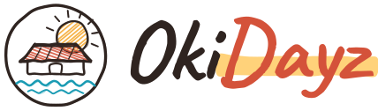
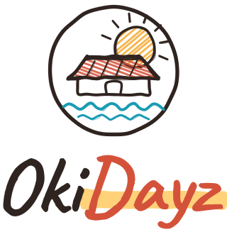
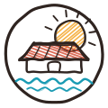
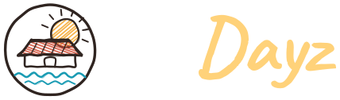
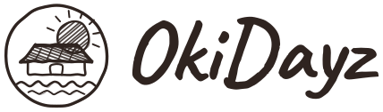
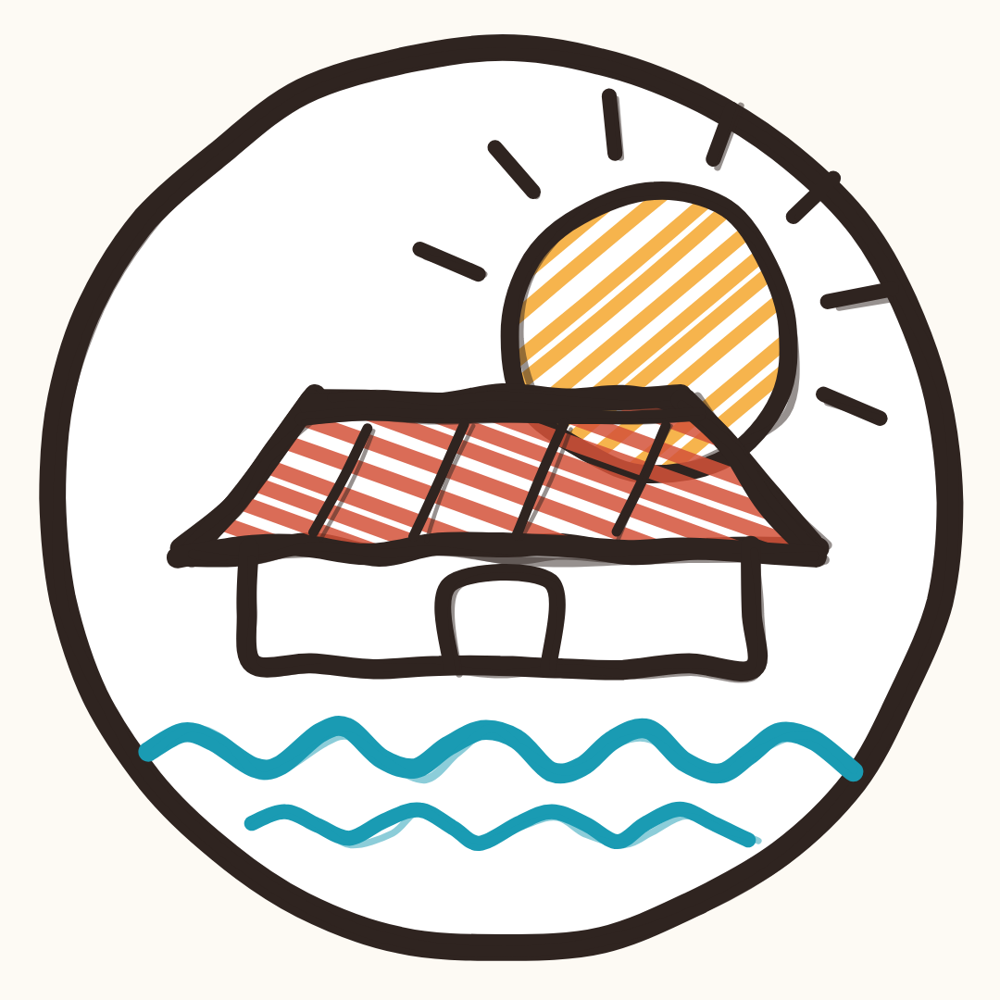

OkiDayz Logo
2026-11-22 SS 定案：鉛筆圓章（赤瓦屋頂＋芒果太陽＋海）＋ Caveat 手寫字標。由 tools/brand_assets.py 生成，改生成器再重跑，不要手改 SVG。

字標「Oki」墨色、「Dayz」赤瓦色，Dayz 底下一條陽光色螢光筆。字已轉成外框，不需要裝字型。
1. 版本
橫式 lockup.svg
直式 lockup-v.svg

圓章 mark.svg

字標 wordmark.svg
2. 反白與單色
深底（赤瓦、墨、照片）用反白：字變白、Dayz 變陽光色、拿掉螢光筆；圓章本身有白底，任何底色都直接放。只能印一色時用單色。
赤瓦底 lockup-rev

墨底 lockup-rev
單色墨 lockup-mono

單色白 wordmark-white
3. 各種背景
漆喰白（標準）
泡（海的頁面）
陽光底：用單色墨
照片上：反白放暗處
插畫上：只放圓章
海色底：反白
4. 留白
四周至少留 x ＝ 圓章直徑的 1/4。這個範圍內不放字、圖、邊框。
xx
5. 最小尺寸
螢幕：橫式寬 ≥ 120px、直式寬 ≥ 80px、字標寬 ≥ 72px、圓章 ≥ 24px。32px 以下一律換 mark-mini（拿掉瓦溝、門、光芒，線加粗）。印刷：橫式寬 ≥ 25mm、圓章 ≥ 8mm。
6. IG／Threads 頭像
上傳 png/avatar-1080.png。IG 會裁成圓形，圓章的手繪圓框剛好落在裁切線內側。

okidayz_在沖繩，天天都是星期日
7. 不要這樣做
不要拉長壓扁
不要換色（只有標準／反白／單色三種）
不要加陰影、外框
OkiDayz不要用別的字體重打（用 wordmark.svg）
不要旋轉
深藍底、魚、彩虹的扁平圓章舊圓章已作廢，不要再用
8. 檔案
lockup.svg | 主 logo 橫式 | 網站頁首、輪播收尾、名片、簡報 |
lockup-v.svg | 主 logo 直式 | IG 收尾頁、貼紙、海報置中 |
mark.svg | 圓章 | IG／Threads 頭像、App 圖示、浮水印 |
mark-mini.svg | 圓章簡化版 | 32px 以下：favicon、留言頭像 |
wordmark.svg | 字標 | 輪播頁腳、版面已經有圓章時 |
lockup-rev.svg / wordmark-rev.svg | 反白 | 赤瓦底、墨底、照片暗處 |
mark-mono.svg / wordmark-mono.svg / lockup-mono.svg | 單色墨 | 單色印刷、蓋章、燙印、傳真 |
wordmark-white.svg | 單色白 | 照片上、只能一色時 |
png/avatar-1080.png | IG 頭像原檔 | 直接上傳 IG／Threads |
png/lockup-1200.png、png/lockup-v-1000.png、png/wordmark-1200.png、png/mark-1024.png | PNG | 不能用 SVG 的地方（Canva、簡報、LINE） |
../../mark-32.png、mark-180.png、mark-512.png | 網站圖示 | favicon、iPhone 主畫面、PWA |